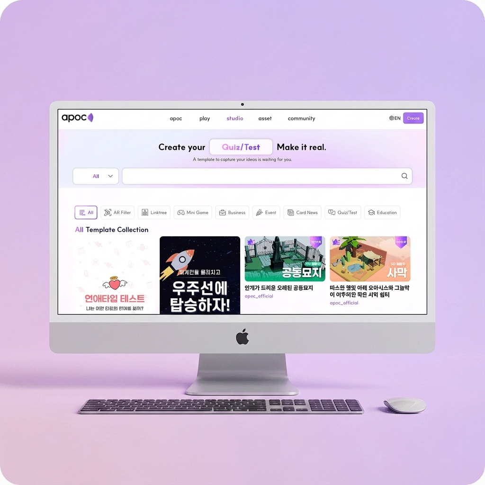

Building New Foundations for APOC Studio
I designed two new pages within the APOC platform—a discovery-driven Studio Template Page for browsing AR/3D assets, and a B2B Case Study Detail Page for showcasing large-scale brand collaborations.
Both pages were created from scratch to improve clarity, enhance storytelling, and provide scalable templates that support future content expansion.
Tools

Role
UI/UX Intern
Period
2025.03-05

Project 1. Studio Discovery Page
Asset Discovery Experience · Desktop & Mobile
Overview
The Studio platform hosts a wide range of AR filters, 3D templates, and event-themed assets. However, users lacked a dedicated way to browse, explore, and discover this content.
I designed the first-ever Studio Discovery Page, defining the information architecture, scroll-based section flow, and UI system from the ground up.
Primary goals:
- Help users understand what types of templates exist
- Enable quick discovery of popular or relevant assets
- Allow exploration of diverse categories with minimal cognitive load
Challenge
1️⃣ Many asset types, no structure
As the platform grew, Studio accumulated:
- AR Filters
- DL Templates
- Event / Festival bundles
- Seasonal assets
But there was no cohesive IA to guide exploration or help users compare options.
2️⃣ Discovery flow had to be created from scratch
This was not a standard listing page. The challenge was to design a scroll-based discovery experience that surfaces content contextually—balancing variety without overwhelming users.
3️⃣ New components without breaking the brand
The existing Studio brand relied on:
- Soft gradients
- Rounded modules
- Clean white canvas
New UI modules and grid systems had to feel native to the brand, not bolted on.
Solution
1️⃣ Scroll-Based Discovery Architecture
I organized the page as a narrative flow of content modules, allowing users to progressively discover assets as they scroll.
Sections included:
- Top Categories
- Trending Templates
- Most Used
- Student Favorites
- Seasonal / Situational Recommendations
- Creator-Focused Sections
- Social Media / YouTube Templates
Each section used a consistent card-based grid system, enabling fast scanning and seamless deep dives.
2️⃣ Large Visual Category Entry Points
At the top of the page, I designed large visual category cards to immediately communicate the scope of the platform:
- AR Filters
- DL Templates
- Event / Festival Templates
This established user orientation within seconds.
3️⃣ Behavior-Based Content Grouping
Instead of relying on complex filters, I grouped content based on usage signals:
- Popular
- Most Used
- Student Favorites
Each asset card included only essential metadata:
- Thumbnail
- Title
- Short description
- Minimal hashtags
- Category indicator
This minimized visual noise while improving scannability.
4️⃣ Gradient “Theme Boxes” for Contextual Storytelling
Mid-page sections such as “Templates for This Month” or “Templates You Might Need Right Now” used soft gradient theme boxes to:
- Visually separate content groups
- Create narrative pauses
- Guide users through the page
5️⃣ Mobile-First Adaptation
Although the primary design was desktop-first, every module was designed to collapse naturally on mobile:
- Single-column lists
- Horizontal scroll sections
- Stacked card modules
Ensuring consistency across breakpoints was a core requirement.
Approach
- Rebuilt IA based on content type, user intent, and usage patterns
- Defined a modular content system aligned with Studio’s brand visuals
- Progressed from low-fidelity sketches → wireframes → final UI
- Collaborated with internal stakeholders to validate content hierarchy
- Ensured all modules were component-ready for development
Results & Impact
- Launched the first dedicated discovery page for Studio
- Improved asset clarity and exploration efficiency
- Consolidated fragmented content into a single, structured flow
- Created a scalable discovery template used for future content expansion
- Successfully deployed across desktop and mobile
Project 2. B2B Project Detail Page
Case Study System for Brand Collaborations · Desktop & Mobile
Overview
Studio partnered with global brands on large-scale interactive projects, but lacked a dedicated way to present these collaborations with clear storytelling and premium visual quality.
I designed the first B2B project detail page, building a reusable case-study template that communicates context, creative process, and measurable outcomes.
Challenge
1️⃣ The purpose of the page had to be defined first
Existing project listings relied heavily on thumbnails, making it difficult to convey:
- Project context
- UX decisions
- Business impact
2️⃣ Diverse projects required a unified structure
Each B2B collaboration differed in:
- Purpose
- Interactive features
- Visual assets
- KPIs
A scalable storytelling framework was required to support future projects.
3️⃣ High visual fidelity for a B2B audience
The page needed to:
- Reflect a premium brand image
- Support long-form content
- Highlight rich visuals without overwhelming users
Solution
1️⃣ Reusable Case Study Narrative Framework
I structured the page using a clear, repeatable storytelling system:
- Hero — project identity
- Overview — high-level summary
- Purpose — context & goals
- Solution — UX flows, features, visuals
- Impact — performance metrics
This allowed readers to follow a logical, end-to-end story.
2️⃣ Visual Annotation Layer (1–5)
To explain complex screens efficiently, I introduced numbered visual annotations directly on top of visuals.
This enabled users to quickly understand:
- Interaction points
- Key UI decisions
- Element hierarchy
— a pattern commonly seen in senior-level portfolios.
3️⃣ Premium Typography & Layout System
Design decisions included:
- Unified typographic scale
- Generous spacing rhythm
- Soft tonal dividers
- Minimal black-and-white base with subtle brand accents
These choices ensured the content-heavy page felt clear, premium, and readable across devices.
4️⃣ Impact-Driven Storytelling
Where available, I integrated quantitative metrics (e.g. Global B2B reach: 20,000+) to emphasize real-world value for partners and stakeholders.
Approach
- Interviewed internal team members to extract project goals and insights
- Organized content into narrative buckets (context → solution → outcome)
- Designed reusable module systems
- Created custom annotation overlays
- Iterated between wireframes and final visuals to refine hierarchy
Results & Impact
- Delivered the company’s first dedicated B2B case-study template
- Improved clarity and storytelling for brand collaborations
- Elevated Studio’s external-facing brand credibility
- Enabled scalable documentation for future B2B projects
- Successfully adapted for desktop and mobile
Why These Projects Matter
- Designed from zero to launch, not incremental tweaks
- Solved discovery and storytelling problems at a platform level
- Built scalable systems, not one-off screens
- Delivered consistent UX across desktop and mobile